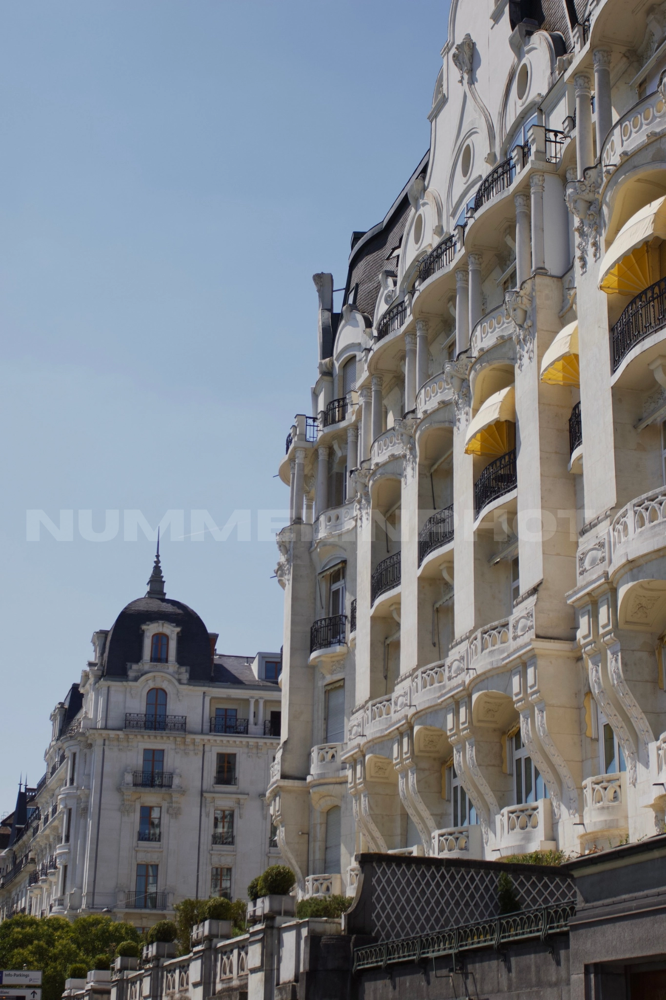
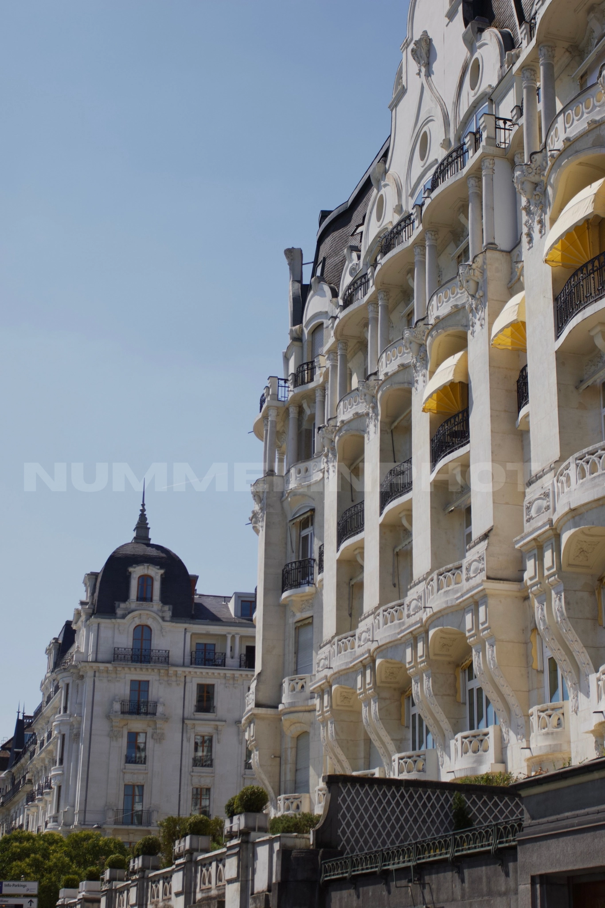

MY VISION
My photography captures moments and subjects that naturally attract my attention, without a predetermined concept. Each image serves as an authentic reflection of beauty as I perceive it in the moment
In addition to photography, I enjoy editing videos—mostly creating edits when inspiration strikes, allowing me to express creativity in a dynamic way.
Feel free to explore my portfolio - and don't forget to press on the photos to see more!
 
